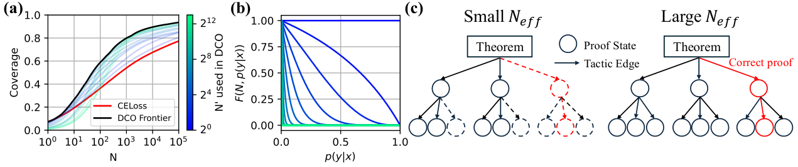
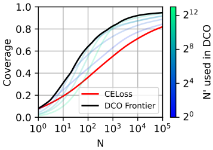
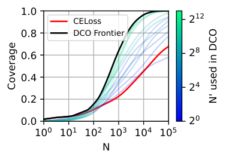

Fine-tunes LLM tactic generators with a confidence-limiting loss and evaluates pass@4k proof search success on Lean Mathlib and MiniF2F theorems.
Abstract
Recent progress in large language models (LLMs) highlights the power of scaling test-time compute to achieve strong performance on complex tasks, such as mathematical reasoning and code generation. This raises a critical question: how should model training be modified to optimize performance under a subsequent test-time compute strategy and budget? To explore this, we focus on pass@N, a simple test-time strategy that searches for a correct answer in $N$ independent samples. We show, surprisingly, that training with cross-entropy (CE) loss can be ${\it misaligned}$ with pass@N in that pass@N accuracy ${\it decreases}$ with longer training. We explain the origins of this misalignment in terms of model overconfidence induced by CE, and experimentally verify our prediction of overconfidence as an impediment to scaling test-time compute via pass@N. Furthermore we suggest a principled, modified training loss that is better aligned to pass@N by limiting model confidence and rescuing pass@N test performance. Our algorithm demonstrates improved mathematical reasoning on MATH and MiniF2F benchmarks under several scenarios: (1) providing answers to math questions; and (2) proving theorems by searching over proof trees of varying shapes. Overall our work underscores the importance of co-designing two traditionally separate phases of LLM development: training-time protocols and test-time search and reasoning strategies.
Problem
Standard cross-entropy fine-tuning can be misaligned with pass@N test-time search. Pass@N accuracy can fall with longer training because the model becomes overconfident. This matters for verifier-based settings such as math answers and formal theorem proving.
Approach
The authors propose Direct Coverage Optimization (DCO). DCO directly maximizes the probability that a correct completion appears among N samples. Its gradient is the cross-entropy gradient scaled by a factor that attenuates updates on examples the model is already confident about. For theorem proving, a step-level DCO variant with parameter N_eff controls how widely the search explores proof trees. These models are evaluated on Mathlib and MiniF2F theorems, including an ensemble over several N_eff values and expert iteration on Mathlib.

Figure 2: (a) DCO improves on CE loss for pass@N test coverage over a broad range of N and traces a Pareto-optimal frontier. We fine-tune Llama-3-8B base models on MATH to produce direct answers: one with CE loss and others using \mathcal{L}_{\text{DCO}}^{N^{\prime}} for various N^{\prime} (color-coded). Each curve shows pass@N coverage for a single fine-tuned model. Note that no N^{\prime} is opt
Results
On MATH, DCO traces a Pareto-optimal pass@N frontier over cross-entropy for Llama-3-8B and 70B, including out-of-distribution evaluation on AIME24. For theorem proving at pass@4k, larger N_eff improves over the CE baseline. Under equal test compute, an ensemble over N_eff values gains 5.2% on Mathlib and 4.1% on MiniF2F.

Figure 8: DCO improves on CE for pass@N test coverage over a broad range of N and traces a Pareto-optimal frontier with Llama-3-70B-base. Same as Figure 2 (a) but with Llama-3-70B-base model. We fine-tune Llama-3-70B base models on the MATH dataset to produce direct answers. We fine-tune for 4 epochs one model using CE loss and several models under the \mathcal{L}_{\text{DCO}}^{N^{\prime}} objecti

Figure 10: DCO improves on CE for pass@N test coverage over a broad range of N and traces a Pareto-optimal frontier on out-of-distribution test set. Same as Figure 2 (a) but evaluated on AIME24. We fine-tune Llama-3-8B base models on the MATH dataset to produce direct answers and evaluate on AIME24. We fine-tune for 4 epochs one model using CE loss and several models under the \mathcal{L}_{\text{D
N_eff
Mathlib
MiniF2F
1 (CE loss)
55.6%
37.4%
8
56.1%
39.5%
16
56.5%
37.0%
Ensemble of all N_eff
62.2%
43.6%
N_eff=1 (5x test compute)
57.0%
39.5%
Proof success rates on Mathlib and MiniF2F using pass@4k